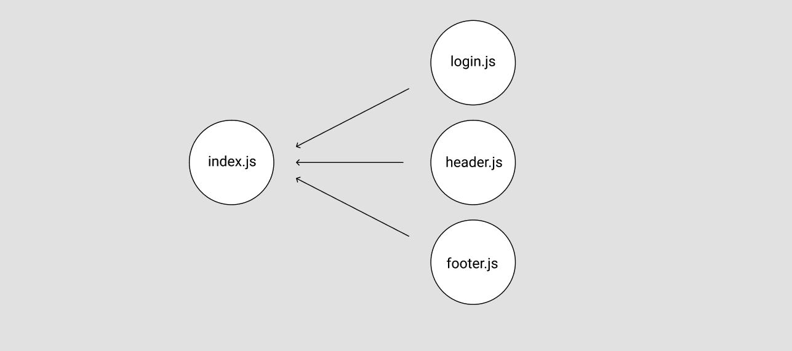

Webpack
프로젝트를 몇 가지 경험하면서 webpack을 다룰 일이 있었는데 정확히 모르던 상황에서 설정을 하려다 보니 중복되는 부분이 있거나 내가 작성한 웹팩 설정을 해석할 수 없는 상황들이 생겼었다 그래서 이번 기회에 webpack에 대해 간단히 다뤄보려고 한다!~
📘 webpack은 뭘까?
webpack 공식 문서를 확인해보면 다음과 같이 나와있다.
At its core, webpack is a static module bundler for modern JavaScript applications. When webpack processes your application, it internally builds a dependency graph from one or more entry points and then combines every module your project needs into one or more bundles, which are static assets to serve your content from.
한국어로 번역한다면 다음과 같다.
webpack은 모던 JavaScript 애플리케이션을 위한 정적 모듈 번들러 입니다. webpack이 애플리케이션을 처리할 때, 내부적으로는 프로젝트에 필요한 모든 모듈을 매핑하고 하나 이상의 번들을 생성하는 디펜던시 그래프를 만듭니다.
결국 모듈 번들러라는 것인데 모듈 번들러는 웹 애플리케이션을 구성하는 자원들 HTML, CSS, Javscript, 이미지 등을 조합해서 병합된 하나의 결과물을 만드는 도구를 의미한다.
📘 Webpack을 왜 쓸까?
1. bundling
뜻 그대로 작성한 코드들을 기능별로 묶어준다!
만약 html에서 script태그를 이용해서 js파일을 적용시키거나 cdn을 통해 라이브러리들을 불러오는 경우 그 수가 적을 때는 육안으로도 관리가 가능하지만 수가 많아질수록 의존성 관리가 어려울 수 있다. webpack을 이용하면 의존성 문제를 해결하면서 여러개의 js파일을 묶어줄 수 있다.
2. code spliting
여러개의 파일들을 번들링 했을때 코드가 너무 길어질 수 있다. 이 때 파일 하나가 너무 무거워지기 때문에 웹 성능에 영향을 끼칠 수 있다. 따라서 코드를 나눠주는 것이 필요하다.
나아가 리액트의 경우 SPA 방식인데 초기에 리소스를 모두 로드하기 때문에 파일들이 너무 무겁다면 초기 로드 속도가 느려지게 된다. 따라서 코드 스플리팅을 함으로써 초기 로딩 속도를 개선할 수 있다.
chunk
번들되는 파일을 여러개의 chunk라는 단위로 나눌 수 있다.
3. tree shaking
tree shaking은 불필요한 코드를 제거해 준다.
const sayHello = () => console.log('hello JongBin!');
sayHello();
위와 같은 코드를 웹팩을 이용해 번들링하는 경우 다음과 같이 코드가 변경이 된다.
console.log('hello JongBin!');
첫 번째 코드는 함수로 감싸서 호출했을때 console.log() 메서드가 호출이 되는데 단 한번만 호출이 되기 때문에 굳이 함수로 만들어줄 필요가 없다. 웹팩은 이를 인식하고 함수를 제외하고 console.log() 메서드 만 호출되도록 tree shaking 해준다.
(만약 첫번째 코드에서 sayHello 함수가 여러번 호출되었다면 함수가 제거되지 않는다.)
4. source map
배포용으로 빌드한 파일과 원본 파일을 서로 연결시켜 준다.
production 모드로 동작하여 배포용으로 빌드된 파일에서 잘못된 부분이 있었을때 이 빌드된 파일은 번들되고, 압축되었기 때문에 에러난 부분을 찾는 것은 매우 어려울 수 있다. 따라서 잘못된 부분을 수정하기 위해서는 원본 파일과 비교해서 해당 부분이 어느 부분인지 알아야 하는데 이것을 가능하게 하는 것이 source map이다.
devtool: 'cheap-eval-source-map';
위 코드를 export하는 부분에 추가해서 사용할 수 있다.
📘 webpack의 핵심 개념
webpack의 공식 문서를 살펴보면 핵심 개념만 이해하면 webpack을 사용하는 것이 어렵지 않다고 한다. 정리해 보자면 다음과 같다.
1. Entry(엔트리)
webpack의 설명을 공식문서에서 살펴보면 webpack은 디펜던시 그래프를 만든다고 한다.
만약 login.js, header.js, footer.js 등의 파일을 하나의 파일(index.js)로 번들을 하는 경우 다음과 같은 그림이 나오게 된다.

이때 index.js가 진입점(entry point)이고 세 파일(login.js, header.js, footer.js)에 의존하고 있는 관계를 형성하게 된다.
2. Output(출력)
output 속성은 생성된 번들을 내보낼 위치와 이 파일의 이름을 지정하는 방법을 webpack에 알려주는 역할을 한다. 기본 출력 파일의 경우에는 ./dist/main.js로 , 생성된 기타 파일의 경우에는 ./dist 폴더로 설정된다.
보통 path와 filename을 명시해 준다.
output: {
path: path.resolve(ROOT_DIR, development ? 'public' : 'build'),
filename: 'js/[name].js',
},
path는 core에 속하며, core는 공통적인 것을 모아놓아 이후 node에서 webpack을 사용할 경우 함께 install한다.
3. Loaders(로더)
공식문서에 따르면 webpack은 JavaScript와 JSON 파일만 이해한다. 따라서 다른 유형의 파일, 만약 babel을 사용한다면 babel-loader를 이용해서 다른 유형의 파일을 처리하거나, 유효한 모듈로 변환해 사용하거나 디펜던시 그래프에 추가할 수 있다.
4. Plugins(플러그인)
webpack을 이용해서 코드들을 번들하게 되면 js파일들만 배포용으로 생성이 되는데 이때 필요한 것이 플러그인이다. 결과물을 처리해주는 역할을 한다.
plugins: [new HtmlWebpackPlugin({ template: './src/index.html' })],
plugin 속성에 배열에 여러개의 플러그인을 사용할 수 있다.
html-webpack-plugin html 파일을 생성해준다. 위 코드는 ./src/index.html인 파일을 번들해 생성한다.
5. Mode(모드)
웹팩을 구동하는데 모드를 설정할 수 있는데 3가지 모드가 존재한다.
- development(개발 모드)
- production(배포 모드): 기본값으로 번들링 과정에서 자체적으로코드를 최적화해 용량을 줄여준다.
- none(모드를 설정하지 않음)
development 모드와 production 모드는 DefinePlugin의 process.env.NODE_ENV를 각각 development, production로 설정한다.
6. Browser Compatibility(브라우저 호환성)
공식문서에 따르면 웹팩은 IE8 이하를 제외하고, ES5가 호환되는 모든 브라우저를 지원한다. 만약 구형 브라우저를 지원하기 위해서는 폴리필을 로드해야 한다.
📄 추가적으로
1. cache
만약 같은 코드를 계속 번들링하게 되면 비효율적이기 때문에 cache를 ture로 설정해서 반복되는 번들링을 방지할 수 있다.
2. module
다양한 유형의 모듈을 처리하는 방법을 정의한다.
rules rule의 배열로서
test로 정규식을 사용해서 적용할 파일을 선택할 수 있고,use속성에 어떤 로더를 적용시킬지 명시할 수 있다. 또한exclude속성에는 적용하지 않을 파일들을 명시할 수 있다. (이 외에도 다양한 옵션이 존재한다.)
3. resolve
- alias: 별칭을 사용할 수 있고, 절대경로를 설정해준다.
- extensions: 확장자 명칭을 생략 가능한 것들을 설정해준다.
- modules: resolve할 어디서 파일을 찾아야 하는지 명시하는 속성.
잘못된 부분이나, 추가할 사항이 있으면 추가하겠습니다!